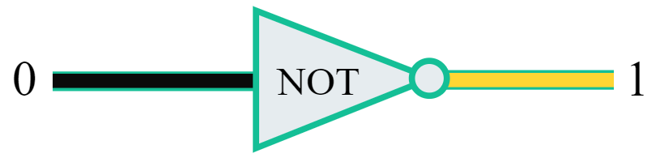
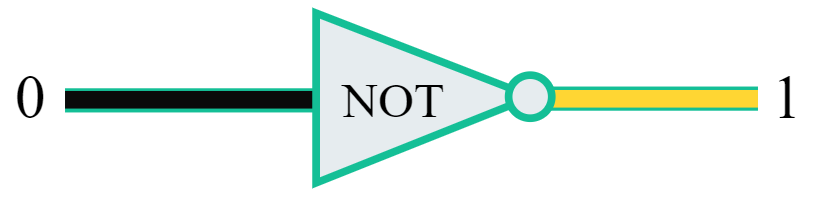
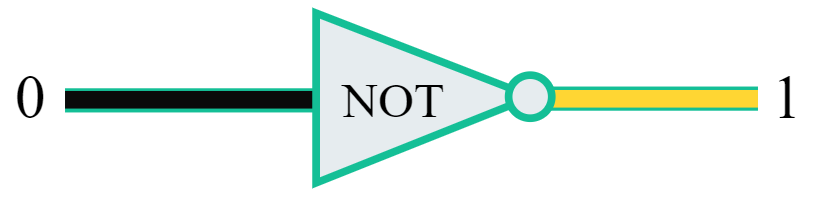

Final Project Not
Here is an example of a not logic gate.
ON
OFF
onclick="document.getElementById('myImage').src='onnotgate.png'">Off

 onclick="document.getElementById('myImage').src='onnotgate.png'">Off

onclick="document.getElementById('myImage').src='onnotgate.png'">Off
